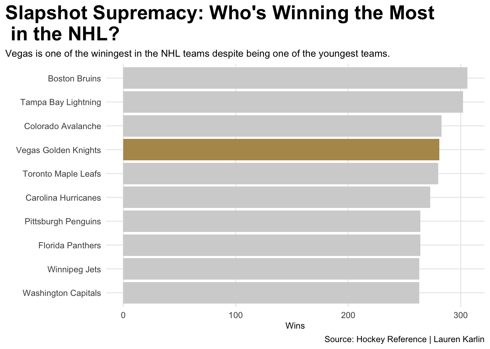
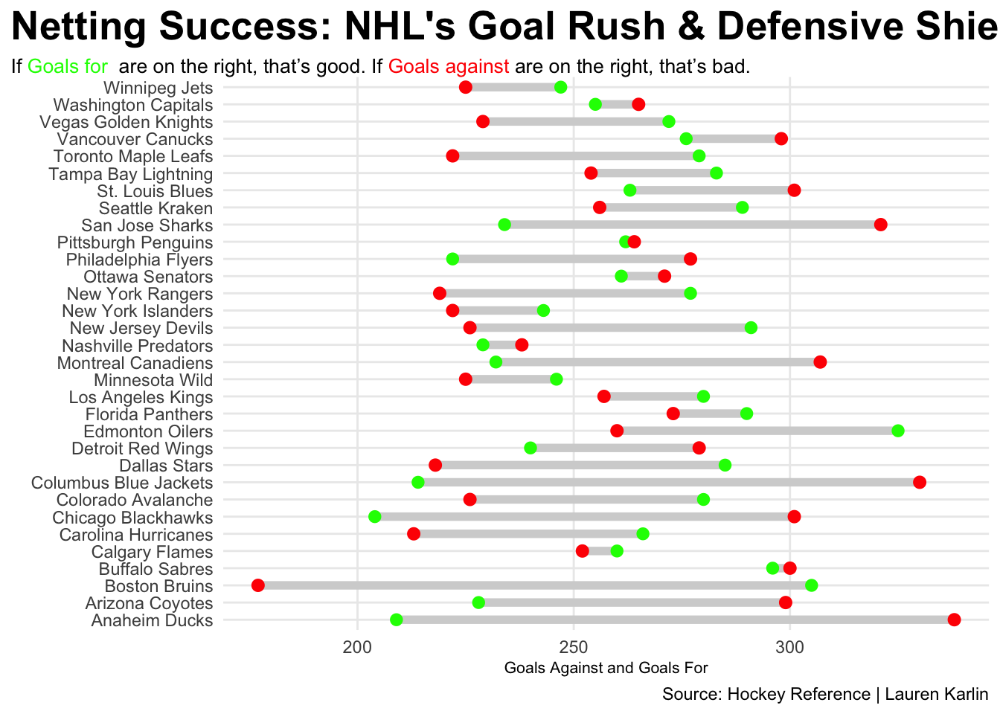
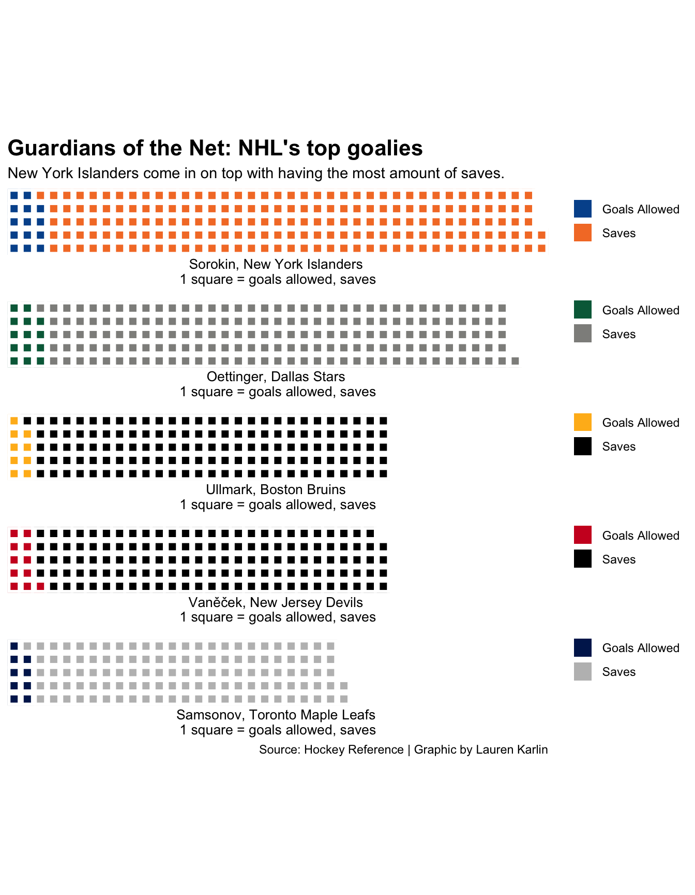

As the Hockey season begins, many who don’t have a team close to them are pulled in different directions. There are 32 teams to root for. In this historical sport, there is one question. Which team is statistically the best Hockey team to root for in the 2023-24 season?
Code
library(tidyverse)library(ggalt)library(ggtext)library(ggrepel)library(waffle)Hockey<-read.csv("~/Documents/SPMC 350/Hockey - Sheet1.csv") |>mutate(Team=gsub("*","",Team,fixed =TRUE))totalwins<- Hockey|>group_by(Team) |>summarise(totalwins=sum (W)) |>arrange(desc(totalwins)) |>top_n(10, wt=totalwins)Vegas <- totalwins |>filter(Team =="Vegas Golden Knights")ggplot() +geom_bar(data=totalwins, aes(x=reorder(Team, totalwins), weight=totalwins),fill="light grey") +geom_bar(data=Vegas, aes(x=reorder(Team, totalwins), weight=totalwins),fill="#B4975A")+coord_flip()+labs(x="", y="Wins",title="Slapshot Supremacy: Who's Winning the Most \n in the NHL?", subtitle="Vegas is one of the winingest in the NHL teams despite being one of the youngest teams.", caption="Source: Hockey Reference | Lauren Karlin" ) +theme_minimal()+theme(plot.title =element_text(size =20, face ="bold"),axis.title =element_text(size =9), plot.subtitle =element_text(size=10), panel.grid.minor =element_blank(),plot.title.position ="plot", )

Well, The top 10 winningest teams in the NHL since 2017. The Golden Knights stun with being number four on the list and just having five years in the league. Sure both Tampa and Vegas haven’t been around as long as the Boston Bruins. Luckily there are many different types of teams including under and top dogs. With winning, the next thing is looking at goal differentials.
Code
Hockey22 <- Hockey |>filter(Years==2022)ggplot() +geom_dumbbell(data=Hockey22, aes(y=Team, x=GF, xend=GA),size =2,colour ="light grey",colour_x ="green",colour_xend ="red") +labs(title="Netting Success: NHL's Goal Rush & Defensive Shield", subtitle ="If <span style = 'color:green;'>Goals for </span> are on the right, that's good. If <span style = 'color:red;'>Goals against</span> are on the right, that's bad.",x="Goals Against and Goals For",y="",caption="Source: Hockey Reference | Lauren Karlin" ) +theme_minimal() +theme(plot.subtitle =element_textbox_simple(size=10),plot.title =element_text(size =20, face ="bold"),axis.title =element_text(size =8), panel.grid.minor =element_blank(),plot.title.position ="plot" )
Warning: Using the `size` aesthetic with geom_segment was deprecated in ggplot2 3.4.0.
ℹ Please use the `linewidth` aesthetic instead.

Goal differentials. Again Vegas has a good record on goals allowed and goals scored. Toronto and Boston have wide differentials showing that it’s harder to score against than for them. It is proving that they are one of the more consistent teams at keeping shutouts and being good on both sides of the ice.
While being good defensively doesn’t mean anything if your goalie doesn’t stop the puck. Surprisingly the top goalie is on the Islanders net. Toronto and the Bruins are the top five goals when it comes to goals allowed and saves. Having support and consistency is key in hockey.
Code
Ullmark <-c("Goals Allowed"=91, "Saves"=1366, 566)Samsonov <-c("Goals Allowed"=96, "Saves"=1184, 743)Sorokin <-c("Goals Allowed"=140, "Saves"=1883)Oettinger <-c("Goals Allowed"=144, "Saves"=1776, 103)Vaněček <-c("Goals Allowed"=119, "Saves"=1333, 571)iron(waffle( Sorokin/10, rows =5, colors =c("#00539B", "#F47D30") ) +labs(title ="Guardians of the Net: NHL's top goalies",subtitle="New York Islanders come in on top with having the most amount of saves.",x ="Sorokin, New York Islanders \n1 square = goals allowed, saves" ) +theme(plot.title =element_text(size =16, face ="bold"),axis.title =element_text(size =10),axis.title.y =element_blank() ),waffle( Oettinger/10, rows =5, colors =c("#006847", "#8F8F8C", "white"), ) +labs(x ="Oettinger, Dallas Stars \n1 square = goals allowed, saves" ), waffle( Ullmark/10, rows =5, colors =c("#FFB81C", "black", "white"), ) +labs(x ="Ullmark, Boston Bruins \n1 square = goals allowed, saves" ), waffle( Vaněček/10, rows =5, colors =c("#CE1126", "black", "white"), ) +labs(x ="Vaněček, New Jersey Devils \n1 square = goals allowed, saves" ), waffle( Samsonov/10, rows =5, colors =c("#00205B", "grey", "white"), ) +labs(x ="Samsonov, Toronto Maple Leafs \n1 square = goals allowed, saves",caption="Source: Hockey Reference | Graphic by Lauren Karlin"))

Well, fans do not want to hop on a bandwagon in Vegas or be disappointed with the team’s unlucky playoff run Like Toronto. This year, fans should look towards the historical and better team in the league: Boston. They are good at goaltending, scoring and winning proving that they have tenacity and are electric on the ice. They have been around since 1924, and are currently first in the East in the NHL. This looks to be their year to win their seventh Stanley Cup.